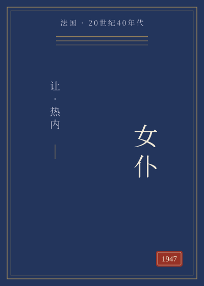
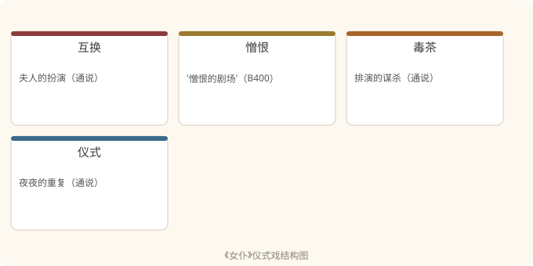

女仆
一、基本信息
| 作者 | 让·热内 |
|---|---|
| 成书/出版 | 1947年（Britannica B400：Les Bonnes (1947)——'Theatre of Hatred'） Jean Genet — Encyclopaedia Britannica（百科全书） |
| 国别/地区 | 法国 |
| 时代 | 近代 · 20世纪40年代 |
| 体裁 | 戏剧 |
| 语言 | 法语 |

《女仆》仪式戏结构图（主题·结构图）
二、创作背景
Britannica（B400）：Les Bonnes (1947)——作品列表；'This Theatre of Hatred attempts to wrest the maximum dramatic power from a social or political situation'（'憎恨的剧场'——从社会或政治情境中榨取最大的戏剧力量）。
Britannica（B400）：热内——'a French criminal and social outcast turned writer'。
题材（通说待核）：两女仆扮演'夫人'的仪式戏——克莱尔与索朗日的谋杀排演（原型帕潘姐妹案——通说待核）。
三、内容脉络
（通说待核）'夫人'与'女仆'的角色互换仪式。
（通说待核）'茶'与毒药的谋杀排演。
四、主要人物表
| 人物 | 身份 | 说明 |
|---|---|---|
| 克莱尔/索朗日 | 两女仆 | （通说待核，B400未载） |
| 夫人 | 被扮演者 | （通说待核） |
五、主题与艺术特点
- '憎恨的剧场'（B400：Theatre of Hatred）。
- 角色互换的仪式（通说待核）。
- 仆与主的戏中戏（通说待核）。
六、影响与评论
- Britannica：'Theatre of Hatred'（B400）。
Jean Genet — Encyclopaedia Britannica（百科全书） - Britannica：'criminal and social outcast turned writer'（B400 作者级）。
Jean Genet — Encyclopaedia Britannica（百科全书）
七、阅读建议
难点
- '仪式戏'的结构。
- 帕潘姐妹案原型（通说待核）。
- 《女仆》中译本（人民文学《热内戏剧集》等——通说待核）。
- 法文原版。
热内戏剧首选；与《鲜花圣母》对读。
八、待核实
- 克莱尔/索朗日人名核对（通说）。
- 1947年首演细节待核。
- 帕潘姐妹案原型待核。